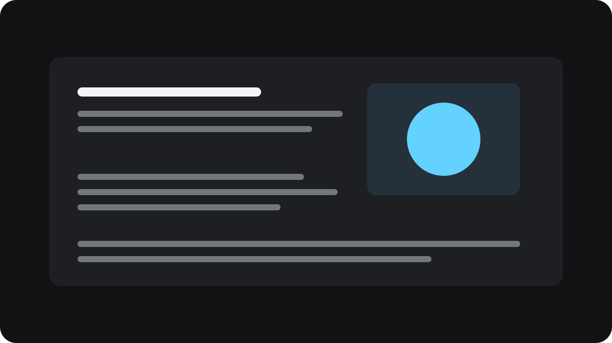

長い文章を、自分の速度で読む
画面に表示されている文章は、同じ内容でも読み方によって大きく印象が変わります。小さな文字や明るすぎる背景は、それだけで読む気持ちを削いでしまいます。
readerは文章を保存する本棚ではありません。いま目の前にある文章を、その場だけ、自分が読みやすい形へ変換します。

PageとSpots
通常の文章として自分の速度でスクロールすることも、視線を固定したままSpotsで読み進めることもできます。読み方を変えても、同じ場所から続きを始められます。
読み終えて閉じると、元のページとスクロール位置へ戻ります。本文や読書位置は端末に残しません。
すぐに読み始める
ページの右端にある細い取っ手へ親指を伸ばします。確認画面はありません。一度押すだけで、readerがすぐに開きます。